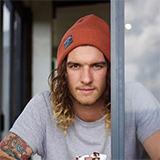

отзывы
Олег Павлов
12.10.2016
Пользуемся услугами коворкинга стабильно раз в неделю, когда проводим совещания директоров. Получается намного дешевле и удобно всем добираться. Единственное пожелание – расширить меню, потому что бизнес-ланчи – это все таки средний уровень, а хочется чего то более вкусного, чтобы можно было угощать начальство.


'Эрнест Изиль'
01.02.2016
Я фрилансер, программист, работать дома не могу, так как мешают дети. Здесь нашел то, что давно искал – тишину и спокойствие. Эффективность работы выросла, как и гонорары. Очень удобно, что коворкинг находится недалеко от метро. Стабильный интернет, чистота и порядок вокруг, никто не мешает. Цены сначала показались высокими, но учитывая полученные преимущества, все отлично!
Елена Сургай
22.12.201
Захожу сюда не часто, так как не мой район, но когда бываю в центре, то периодически нужно место для плодотворной работы. Интернет-клубы не подходят, так как не обеспечивают такой уровень сервиса, как Воркадиум. Здесь я нахожу вдохновение и могу выделить время для творчества. Желаю Воркадиуму процветания и развития. Если будете открывать филиалы, обратите внимание на Алексеевский район, я буду вашим постоянным клиентом :)
Наталья Осадчая
14.08.2015
Провожу здесь встречи с клиентами в неформальной обстановке. Удобно, что при необходимости все под рукой – и ксерокс, и принтер и магазин канцелярии. Заключаю здесь свои лучшие договора. Единственное пожелание – сделайте еще несколько переговорных комнат на 10-15 человек, а то они пользуются большим спросом и не всегда есть возможность забронировать.